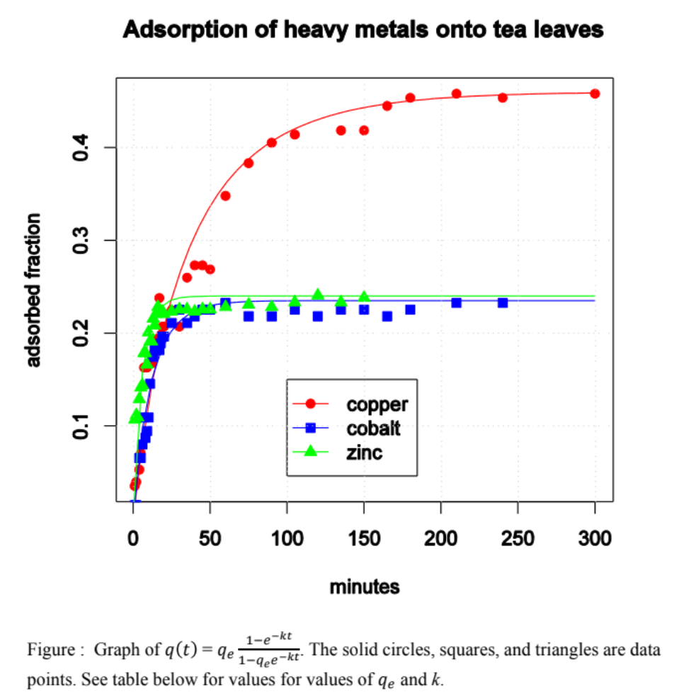

Project Description
Modeling Adsorption Kinetics with Differential Equations
Kwangmin Kim
April 29, 2023
- 목적: 찻잎의 중금속의 흡착 과정을 mechanistic modeling
- 기간: 2015.01 - 2015.06 (6 months)
- 역할: 연구원
- 참여 인원: 1명의 수학 교수 (mentor), 1명의 생물학 교수 (mentor), 2명의 수학자 (연구원), 1명의 생물학자 (연구원)
- 중금속(예: 구리(Cu), 아연(Zn) 및 코발트(Co))은 silent 오염 물질이다. 물 속에서 그들의 존재는 쉽게 감지되지 않는다. 이러한 오염 물질은 다양한 방식으로 우리 몸에 들어갈 수 있는데 오염된 물을 마시거나 오염된 음식을 섭취함으로써 이러한 오염 물질은 인간과 다른 살아있는 유기체에 독성 영향을 미치게 된다. 사용한 찻잎은 오염된 폐수에서 발견되는 2가 Cu, Zn 및 Co 이온에 대한 흡착 기질로 사용할 수 있다.
- 오염된 물에서 중금속을 제거하기 위해 찻잎을 사용할 수 있는 비율을 모델링하기 위해 미분 방정식이 사용되었다. 이 모델은 실험의 시계열 데이터와 비선형 최소 제곱 회귀를 사용하여 테스트되었다.
- 찻잎에 대한 중금속의 흡착 과정은 미분 방정식을 사용하여 mechanistically 모델링할 수 있다.
- mechanistic model parameter는 시계열 데이터에 맞게 추정할 수 있다.
- \(S(t)\) is the number of heavy metal molecules adsorbed to the tea leaves at time \(t\).
- \(W(t)\) is the number of heavy metal molecules in the water (and not adsorbed) at time \(t\).
- \(W_0=W(0)=S(t)+W(t)\)
- \(S_e\) is the number of heavy metal molecules adsorbed at the equilibrium state = the “relevant” number of adsorption sites. \(S_e\) is system dependent: e.g., a different initial concentration will have a different \(S_e\)
- \(S_e=W_0 - W_e\)
- \(q(t)\) is the fraction of heavy metal molecules adsorbed out of the waste water at time \(t\)
- \(q(t)=\frac{S(t)}{W_0}\)
- \(\frac{W_0-S(t)}{V}fb\) is a fraction of heavy metal molecules per \(mL\) of water,
- \(f\) is \(mL\)’s of water that contact leaves per minute,
- \(b\) is the probability that a leaf hitting molecule hits a binding site,
- \(\frac{S_e-S(t)}{S_e}\) is a fraction of biniding sites that are occupied, and
- \(p\) is the probability that hitting an unoccupied binding site results in binding.
- \((t_i,\hat{q}(t_i))\) is the observed values,
- \(q(t,k) =q_e\frac{1-e^{-kt}}{1-q_ee^{-kt}}\)
초기 미분방정식 설정 \[ \frac{dS}{dt} =\frac{W_0-S(t)}{V}fb\frac{S_e-S(t)}{S_e}p \]
- 이 방정식은 시간에 따른 흡착된 중금속 분자 수의 변화율을 나타낸다. 우변의 각 항은 흡착 과정의 다양한 요소를 반영한다
단순화
\[\frac{dS}{dt} =k_s(W_0-S(t))(S_e-S(t)) \text{ where } k_s=\frac{fbp}{VS_e}\]
- 수학 연산을 쉽게 하기 위해 여러 상수를 \(k_s\) 로 통합하여 방정식을 단순화한다.
변수 변환
\[\frac{dq}{dt} =\frac{S'(t)}{W_0}\]
- \(q(t)\) 를 도입하여 흡착된 분자의 비율로 문제를 Reformulation 한다. 차원을 없애 문제를 일반화한다.
방정식 변환 \[\frac{dq}{dt} =k_q(1-q)(q_e-q) \text{ where } k_q=W_0k_S=\frac{W_0fbp}{VS_e}=\frac{fbp}{Vq_e}\]
- \(q\) 에 대한 미분방정식으로 변환한다. 이 형태는 로지스틱 성장 모델과 유사한 구조를 가진다.
미분방정식 풀이
- 변수 분리(variable separable) \[\frac{dq}{(1-q)(q_e-q)}=k_qdt\]
- 부분 분수 분해 (Partial fraction decompositio) \[\frac{1}{(1-q)(q_e-q)}=\frac{A}{1-q}+\frac{B}{q_e-q}\]
- 상수 A, B 결정 \[A=(q_e-1)^{-1}, B=(1-q_e)^{-1}\]
- 적분 \[ \int \left \{\frac{(q_e-1)^{-1}}{1-q}+\frac{(1-q_e)^{-1}}{q_e-q}\right\}dq =\int k_qdt \\ \]
- 부분 분수 분해를 통해 적분 가능한 형태로 만든다.
해 도출 \[q(t)= \frac{q_e-q_ee^{-kt}}{1-q_ee^{-kt}}=q_e\frac{1-e^{-kt}}{1-q_ee^{-kt}} \text{ where } k=(1-q_e)k_q\]
- 이는 시간에 따른 흡착 비율을 나타내는 닫힌 형태의 해이다. 이 해는 초기 조건 \(q(0)=0\) 을 만족한다.
매개변수 추정 \[\arg\min_k\sum_{i=1}^{n}(q(t_i,k)-\hat{q}(t_i))^2\]
- 이는 최소제곱법을 사용하여 모델 매개변수 \(k\) 를 추정하는 과정이다. 관측된 데이터와 모델 예측 사이의 차이를 최소화한다.
- Mathematics: differential equation
- Statistics: non-linear least square with the Levenberg-Marquardt algorithm
- Biology
- 1 mathematics professor (advisor)
- 1 biology professor (advisor)
- 2 mathematicians
- 1 biologist
- mechanistic modeling 결과 파라미터의 유의성이 높은 것으로 관찰됐다.
- New York City College of Technology (CUNY) 포스터 발표
- BMCC (CUNY) 포스터 발표
- Manhattan College에서 개최되는 2015 연례 모임 기고 논문 및 포스터 세션을 위한 발표회에서 포스터 발표
- $1,000 Stipend (CUNY)
- Heavy metals (such as Copper (Cu), Zinc (Zn), and Cobalt (Co)) are silent pollutants; their presence in water is not easily detected. These pollutants can enter our bodies in different ways, e.g. through drinking contaminated water or eating contaminated food. These pollutants have toxic effects on humans and other living organisms. Spent tea leaves can be used as adsorbent substrates for divalent Cu, Zn and Co ions found in polluted waste water.
- Differential equations were used to model the rate at which tea leaves can be used to clear heavy metals from polluted water. The model was tested using time series data from experiments and non-linear least squares regression.
- the adsorption process of heavy metals to tea leaves can be mechanistically modeld using a differential equation.
- the parameter of the mechanistic model can be estimated to fit the time series data.
- \(S(t)\) is the number of heavy metal molecules adsorbed to the tea leaves at time \(t\).
- \(W(t)\) is the number of heavy metal molecules in the water (and not adsorbed) at time \(t\).
- \(W_0=W(0)=S(t)+W(t)\)
- \(S_e\) is the number of heavy metal molecules adsorbed at the equilibrium state = the “relevant” number of adsorption sites. \(S_e\) is system dependent: e.g., a different initial concentration will have a different \(S_e\)
- \(S_e=W_0 - W_e\)
- \(q(t)\) is the fraction of heavy metal molecules adsorbed out of the waste water at time \(t\)
- \(q(t)=\frac{S(t)}{W_0}\)
- \(\frac{W_0-S(t)}{V}fb\) is a fraction of heavy metal molecules per \(mL\) of water,
- \(f\) is \(mL\)’s of water that contact leaves per minute,
- \(b\) is the probability that a leaf hitting molecule hits a binding site,
- \(\frac{S_e-S(t)}{S_e}\) is a fraction of biniding sites that are occupied, and
- \(p\) is the probability that hitting an unoccupied binding site results in binding.
- \((t_i,\hat{q}(t_i))\) is the observed values,
- \(q(t,k) =q_e\frac{1-e^{-kt}}{1-q_ee^{-kt}}\)
- Mathematics: differential equation
- Statistics: non-linear least square with the Levenberg-Marquardt algorithm
- Biology
- 1 mathematics professor (advisor)
- 1 biology professor (advisor)
- 2 mathematicians
- 1 biologist
1 개요
2 Backgrounds
3 Objective
4 Methodology
4.1 Mechanistic Modeling
Definitions
Formulation
\[ \begin{align*} \frac{dS}{dt} &=\frac{W_0-S(t)}{V}fb\frac{S_e-S(t)}{S_e}p\\ &=k_s(W_0-S(t))(S_e-S(t)) \text{ where } k_s=\frac{fbp}{VS_e} \end{align*} \]
where
Since \(q(t)=\frac{S(t)}{W_0}\),
\[ \begin{align*} \frac{dq}{dt} &=\frac{S'(t)}{W_0}\\ &=\frac{k_S}{W_0}(W_0-S(t))(S_e-S(t))\\ &=W_0k_S\frac{(W_0-S(t))(S_e-S(t))}{W_0^2}\\ &=k_S(1-q(t))(q_e-q(t)) \text{ where } k_q=W_0k_S=\frac{W_0fbp}{VS_e}=\frac{fbp}{Vq_e} \\ &=\frac{dq}{dt} \\ &=k_q(1-q)(q_e-q) \\ q(0) &=0 \end{align*} \]
Solving the above initial value problem: \[ \begin{align*} \frac{dq}{dt}&=k_q(1-q)(q_e-q) \\ \frac{dq}{(1-q)(q_e-q)}&=k_qdt \\ \int \frac{dq}{(1-q)(q_e-q)}&=\int k_qdt \\ \frac{1}{(1-q)(q_e-q)}&=\frac{A}{1-q}+\frac{B}{q_e-q} \\ 1&=A(q_e-q)+B(1-q)\\ 1&=A(q_e-1) \text{ by letting } q=1\\ (q_e-1)^{-1}&=A\\ 1&=B(1-q_e) \text{ by letting } q=q_e\\ (1-q_e)^{-1}&=B\\ \int\frac{dq}{(1-q)(q_e-q)}&=\int k_qdt \\ \int \left \{\frac{(q_e-1)^{-1}}{1-q}+\frac{(1-q_e)^{-1}}{q_e-q}\right\}dq&=\int k_qdt \\ q(t)&= \frac{q_e-q_ee^{-kt}}{1-q_ee^{-kt}}=q_e\frac{1-e^{-kt}}{1-q_ee^{-kt}} \text{ where } k=(1-q_e)k_q\\ \arg\min_k&\sum_{i=1}^{n}(q(t_i,k)-\hat{q}(t_i))^2 \end{align*} \] where
Explanation
5 Required Skills
6 Colaborators
7 Result

| Metal | \(q_e\) | parameter | Estimate | Std. Error | \(t\) value | \(Pr(>|t|)\) | df | n |
|---|---|---|---|---|---|---|---|---|
| copper | .46 | \(k\) | 0.01281219 | 0.0008855 | 20.47 | \(<2e-16\) | 34 | 35 |
| cobalt | .235 | \(k\) | 0.069941 | 0.003279 | 21.33 | \(<2e-16\) | 34 | 35 |
| zinc | .24 | \(k\) | 0.150255 | 0.009133 | 16.45 | \(<2e-16\) | 32 | 33 |
8 Achievement
9 Background
10 Objective
11 Methodology
11.1 Mechanistic Modeling
Definitions
Formulation
\[ \begin{align*} \frac{dS}{dt} &=\frac{W_0-S(t)}{V}fb\frac{S_e-S(t)}{S_e}p\\ &=k_s(W_0-S(t))(S_e-S(t)) \text{ where } k_s=\frac{fbp}{VS_e} \end{align*} \]
where
Since \(q(t)=\frac{S(t)}{W_0}\),
\[ \begin{align*} \frac{dq}{dt} &=\frac{S'(t)}{W_0}\\ &=\frac{k_S}{W_0}(W_0-S(t))(S_e-S(t))\\ &=W_0k_S\frac{(W_0-S(t))(S_e-S(t))}{W_0^2}\\ &=k_S(1-q(t))(q_e-q(t)) \text{ where } k_q=W_0k_S=\frac{W_0fbp}{VS_e}=\frac{fbp}{Vq_e} \\ &=\frac{dq}{dt} \\ &=k_q(1-q)(q_e-q) \\ q(0) &=0 \end{align*} \]
Solving the above initial value problem: \[ \begin{align*} \frac{dq}{dt}&=k_q(1-q)(q_e-q) \\ \frac{dq}{(1-q)(q_e-q)}&=k_qdt \\ \int \frac{dq}{(1-q)(q_e-q)}&=\int k_qdt \\ \frac{1}{(1-q)(q_e-q)}&=\frac{A}{1-q}+\frac{B}{q_e-q} \\ 1&=A(q_e-q)+B(1-q)\\ 1&=A(q_e-1) \text{ by letting } q=1\\ (q_e-1)^{-1}&=A\\ 1&=B(1-q_e) \text{ by letting } q=q_e\\ (1-q_e)^{-1}&=B\\ \int\frac{dq}{(1-q)(q_e-q)}&=\int k_qdt \\ \int \left \{\frac{(q_e-1)^{-1}}{1-q}+\frac{(1-q_e)^{-1}}{q_e-q}\right\}dq&=\int k_qdt \\ q(t)&= \frac{q_e-q_ee^{-kt}}{1-q_ee^{-kt}}=q_e\frac{1-e^{-kt}}{1-q_ee^{-kt}} \text{ where } k=(1-q_e)k_q\\ \arg\min_k&\sum_{i=1}^{n}(q(t_i,k)-\hat{q}(t_i))^2 \end{align*} \] where
12 Required Skills
13 Colaborators
14 Result
| Metal | \(q_e\) | parameter | Estimate | Std. Error | \(t\) value | \(Pr(>|t|)\) | df | n |
|---|---|---|---|---|---|---|---|---|
| copper | .46 | \(k\) | 0.01281219 | 0.0008855 | 20.47 | \(<2e-16\) | 34 | 35 |
| cobalt | .235 | \(k\) | 0.069941 | 0.003279 | 21.33 | \(<2e-16\) | 34 | 35 |
| zinc | .24 | \(k\) | 0.150255 | 0.009133 | 16.45 | \(<2e-16\) | 32 | 33 |